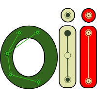
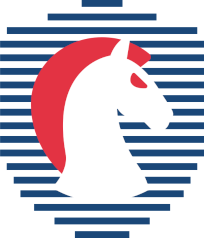

sudo apt update
[+] UPDATED!
whoami
An italian student and cybersecurity and competitive programming enthusiast
Projects
Awards

Olimpiadi Di Informatica
In 2022 I've started learning C++ and its libraries for the "Olimpiadi Di Informatica", a challenge that every year makes highschool students be able to study complex data structures, algorithms and all kinds of other competitive programming stuff. In the beginning I couldn't resolve much problems but after a few months I've started to understand so many things.
2022: Finals 58th place, no medal

Olimpiadi Di Cybersecurity
In 2022 I've also started learning Python and its libraries (like pwntools, requests etc..) for the "Olimpiadi Di Cybersecurity", a challenge that every year makes highschool students be able to study things about is a CTF Jeopardy where you must find the flag and submit it to the challenge's server.
Scripting, Network Security, Web Security, Software Security and Cryptography. This type of challenge
//TODO: Still to see